The Changing Landscape of Hematological
Malignancy Treatment
Implications for antifungal therapy
Russell E. Lewis, Pharm.D., FCCP
Associate Professor of Medicine, Infectious Diseases
Department of Molecular Medicine, University of Padua
Hematopoietic Stem Cell Transplant Program and Cell Therapies
Ca’ Foncello Hospital, Treviso, Italy
russelledward.lewis@unipd.it
https://github.com/Russlewisbo

Disclosures
- Research funding: Merck & Co Inc., Gilead Sciences
- Speaking: Avir, Gilead
- Consultancy: F2G, Scynexis, Basilea, Gilead Sciences, Cidara Therapeutics
Agenda
- How will new therapies impact the epidemiology of invasive fungal infections?
- What are the risks of toxicity and drug interactions with these newer therapies?
- Is their a unique role for isavuconazole versus other triazoles?
“The cure of leukemia through the optimist’s prism”
| Disease | Current/ future therapies* |
Survival (5 year) |
|---|---|---|
| Hairy cell leukemia | Clofarabine + gemtuzumab ozogamicin (GO) | 90% |
| Acute premyelocytic leukemia | ATRA + arsenic ± GO | 80-90% |
| AML (core binding factor positive) |
FLAG-GO ± IDA, alloHSCT if MRD positive, if indicated, oral AZA/HMA with venetoclax or FLT3/IDH or menin inhibitors | 80-90%+ |
| AML (younger fit) |
FLAG-IDA and venetoclax, CLIA and venetoclax | 50-60% |
| AML (older, unfit, complex karyotype, T-53 mutations, MECOM) |
Low-intensity triple nucleosides (cladarabine, cytarabine and HMAs + venetoclax; HMAs + venetoclax + targeted therapy | 40-50% |
| ALL < 60 years | HyperCVAD + CD19/CD20 targeted antibodies | 60-70% |
| ALL > 60 years | Mini-hyper CVAD+ inotuzumab; blinatumab + ponatinib | 50% |
| Ph-positive ALL | HyperCVAD + ponatinib; blinatumab + ponatinib | 70-80%? |
“The cure of leukemia through the optimist’s prism”
| Disease | Current/ future therapy* | Survival (5 year) |
|---|---|---|
| CML | BCR-Abl1 tyrosine kinase inhibitors (imatinib, dasatinib, bosutinib, nilotunib, ponatinib), alloHSCT | 85-90% |
| CLL | Ibrutinib, other BTKIs (acalabrutinib, zanubrutinib, pirtobrutinib) | 80-90% + |
| MDS | Parenteral HMAs, oral HMAs, venetoclax, others | 40% + |
How are newer targeted therapies…
- Changing the epidemiology of invasive fungal diseases?
- Changing the risk of drug interactions and toxicity with antifungal therapy?
- Is there a unique role for isavuconazole?
How is invasive fungal disease risk altered
by targeted therapies?
Unexpected consequences of targeted therapy?
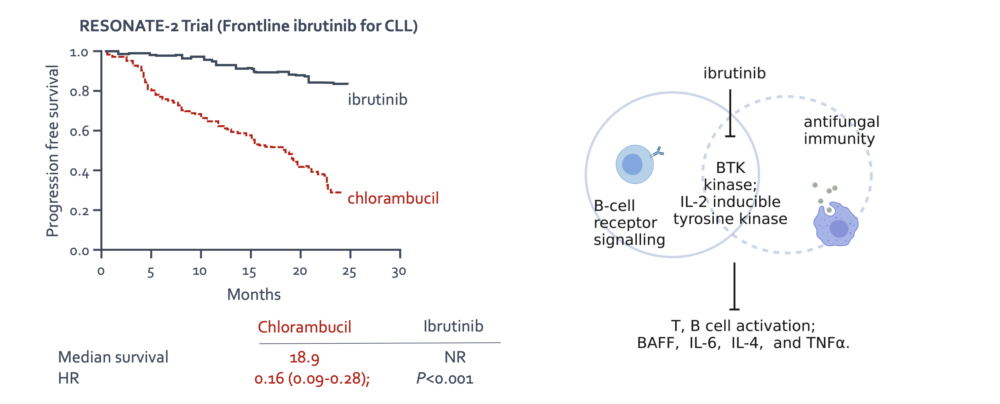
BTK drives neutrophil activation for sterilizing antifungal immunity
Ibrutinib-associated aspergillosis
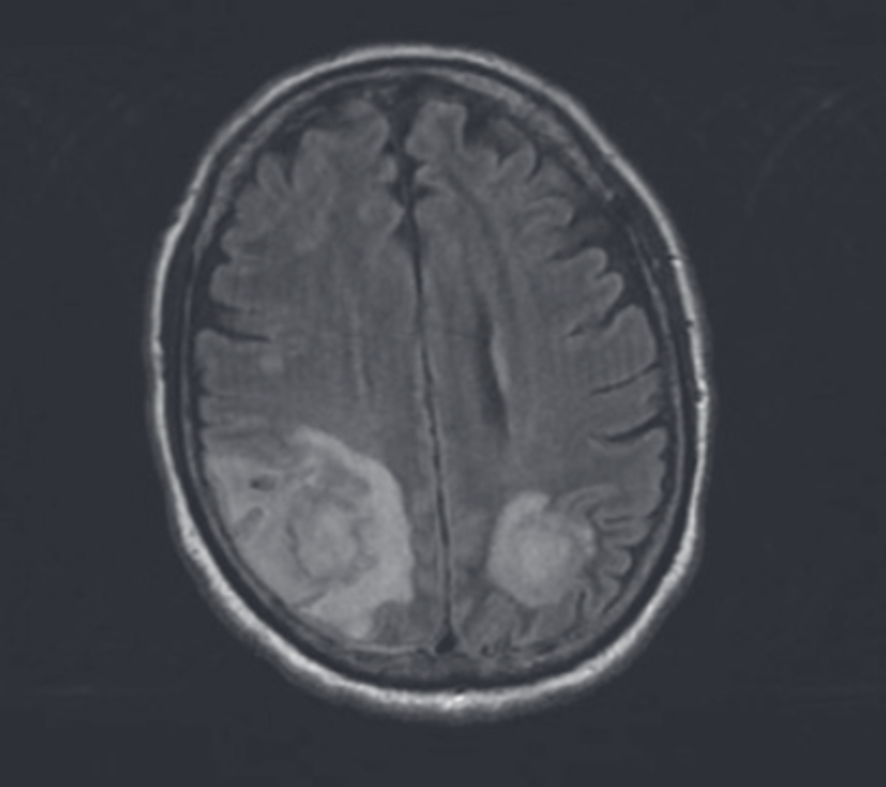
- Retrospective French surveillance study identified 33 cases of aspergillosis in ibrutinib-treated patients with CLL
- CNS aspergillosis in 11/27 (40%), most cases within 3 months of starting therapy
- All patients had refractory/relapsed CLL and other predisposing risk factors
Fungal infections in patients receiving
ibrutinib for lymphoid cancers
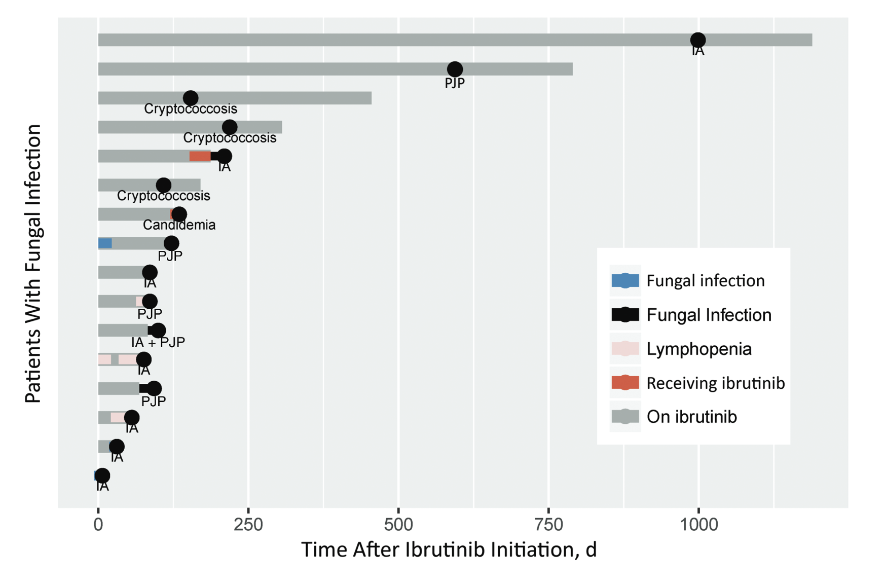
- In a second, retrospective study from MDACC (2014-2018):
- 21 (2.5%) with proven/probable invasive mold infection
- Primarily pneumonia
- Mostly Aspergillus spp.
- Risk factors: monocytopenia, ≥ 3 prior CLL therapies


Managing fungal infection risks with
novel therapies for AML
EHA consensus recommendations
- Systematic review of the literature, recommendations developed using GRADE framework (4977 publications evaluated)
- Outcomes evaluated:
- Incidence of invasive fungal disease (IFD)
- Prolongation of hospitalization
- Days spent in ICU/mortality associated with IFD
- Potential DDIs
- Evidence-based recommendations were developed for hypomethylating agents (HMAs), FLT-3 inhibitors, and venetoclax-HMA combinations
Summary of EHA recommendations-1
- Hypomethylating agent monotherapy:
- Standard use or prophylaxis not recommended
- Risk of IFI increased in patients with neutropenia at onset of treatment, prior intensive chemotherapy → conditional recommendation for prophylaxis
- FLT3 inhibitors (midostaurin, gilteritinib)
- Antifungal prophylaxis recommended during induction chemotherapy
- Conditional recommendation for prophylaxis during consolidation in patients with risk factors (prior IFI, prolonged neutropenia)
- Lack of clear medical guidance for managing drug interactions
- Close monitoring favoured over empiric FLT-3 inhibitor dose reduction
Summary of EHA recommendations-2
- Venetoclax
- Risk of IFI increased in patients with neutropenia at onset of treatment, prior intensive chemotherapy, or prolonged neutropenia with venetoclax
- Conditional recommendation to administer prophylaxis
- Careful management of drug interactions with triazoles
Venetoclax dose-adjustment with triazoles
Venetoclax + hypomethylating agents for AML;
Co-administration with posaconazole ↑ venetoclax AUC 8-fold
| Day | Full dose | Moderate CYP3A4 inhibitor1 | Strong CYP3A4 inhibitor2 |
|---|---|---|---|
| Day 1 | 100 mg | 50 mg | 10 mg |
| Day 2 | 200 mg | 100 mg | 20 mg |
| Day 3 | 400 mg | 200 mg | 50 mg |
| Day 4-28 | 400 mg | 200 mg | 70 mg |
Triazole prophylaxis increases duration of thrombocytopenia but not neutropenia or infections with dose-adjusted venetoclax
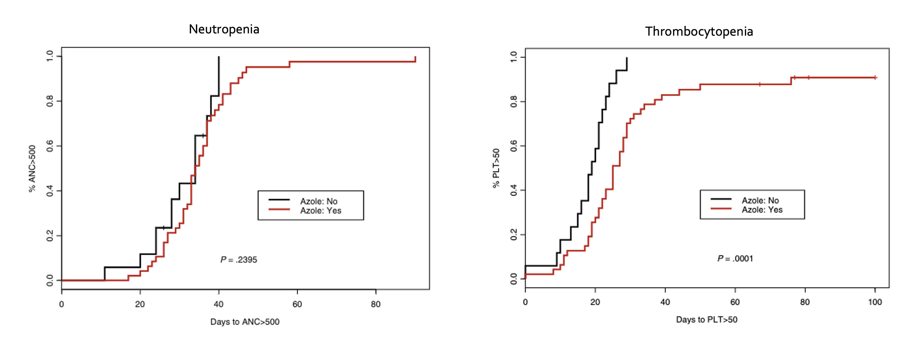
CYP450 Interactions: The achilles heel of triazoles
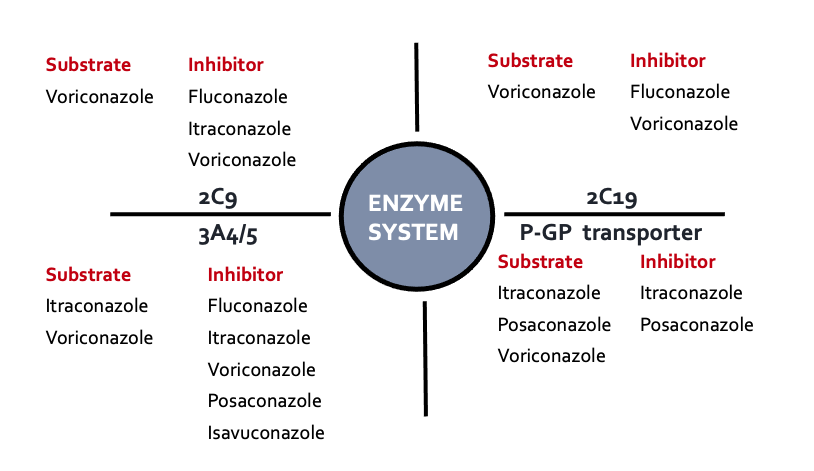
PK/PD Properties of Small Molecule Kinase Inhibitors
| Drug | Venetoclax | Midostraurin | Gilteritinib | Ivosidenib | Enasidinib | Glasdegib |
|---|---|---|---|---|---|---|
| Specificity (targets) | BCL2 | FLT3 | FLT3 | IDH1 | IDH2 | Hedgehog pathway |
| Hepatic | CYP3A4 | CYP3A4 | CYP3A4/5 | CYP3A4/5 | Multiple CYP enzymes including CYP3A4 | CYP3A4/5 |
| Efflux | Substrate of PgP, BCRP | Not a substrate | Substrate of PgP, not BCRP, OATP | Substrate PgP, but not BRCP | Not a substrate of BCRP pr PgP | Substrate for PGP, BCRP |
Toxicities of small-molecule kinase inhibitors

Just avoid triazoles?

The problems with echinocandin prophylaxis
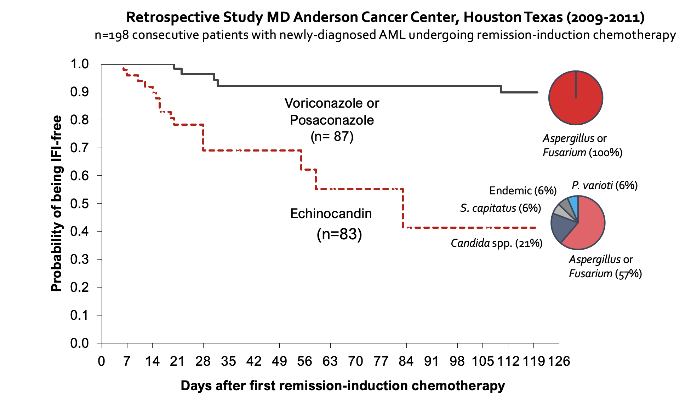
Is their a unique role for isavuconazole
vs. other triazoles?
Strong opinions about voriconazole
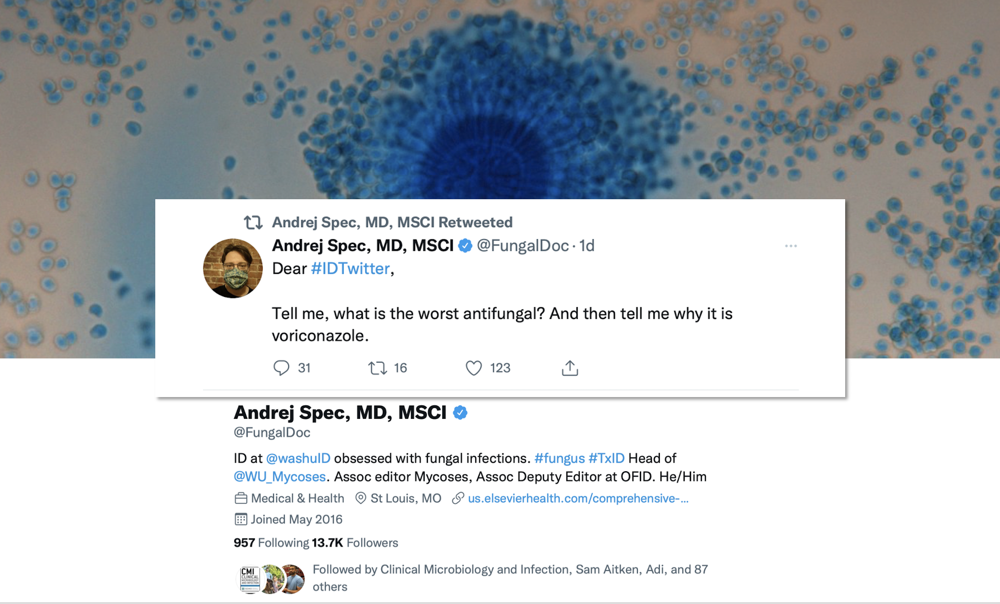Pharmacokinetic complexity of voriconazole

Triazole toxicities


Triazole safety
- Multicenter registry of prophylaxis (n=1777) and treatment (n=816) courses
- Adverse effects leading to treatment discontinuation:
- voriconazole (n=494) 14.2%
- posaconazole (n=547) 11.3%
- isavuconazole (n=514) 3.9%
- multiple/sequenced therapy (n=454) 11.7%
- QTc prolongation was rare, but more frequent with voriconazole and posaconazole
- Severe drug interactions occurred in 4% of all treated patients
- IFI mortality rates were similar for all agents ranging between 1.1-1.8%
What makes isavuconazole
(isavuconazonium) unique?
- Broad spectrum of activity
- Prodrug IV/ oral formulations (> 90% bioav.)
- Predictable linear PK, t1/2=130h
- Less need for TDM
- Better safety profile than voriconazole
- Less potent CYP3A4/5 inhibition
- Less cutaneous, CNS, hepatic toxicities
- Does not prolong QT
QT prolongation risk with triazoles
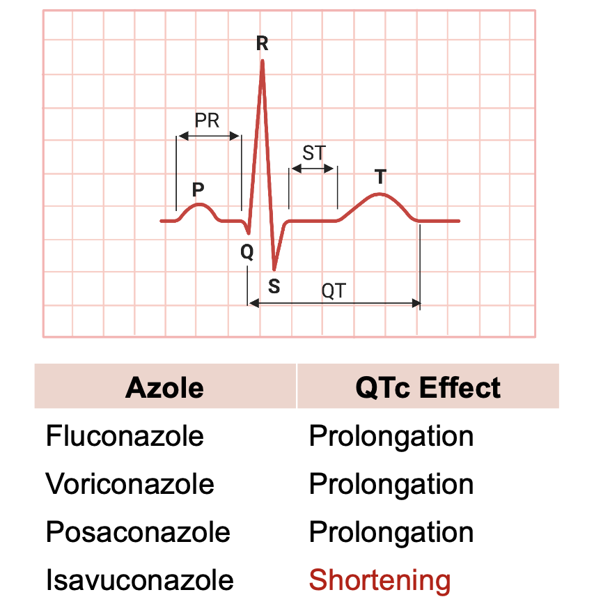
- Older triazoles inhibit human ether-a-go-go (hERG) channel, which underlies rapid K+ rectifier current
- Isavuconazole shortens cardiac QT in a dose-related manner, with no associated cardiac risk
- hCav1.2 L-type Ca++ channels
Isavuconazole versus voriconazole for primary treatment of invasive mould disease caused by Aspergillus and other filamentous fungi (SECURE)
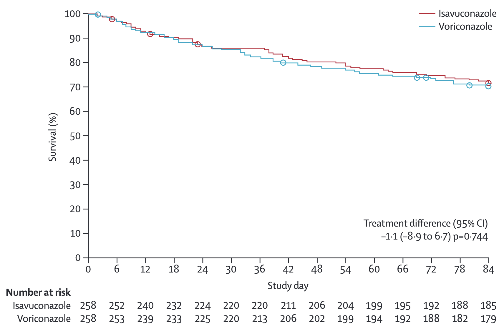
Treatment-emergent adverse effects
in the SECURE trial
- Overall drug-related AE (VOR-60% vs. ISA-42%, p<0.001)
Hepatobiliary disorders (VOR-16% vs. ISA-9%, p=0.016)
Visual disturbances (VOR-27% vs. ISA-15%, p=0.002)
Skin or subcutaneous tissue (VOR-42% vs. ISA-33%, p=0.037
Isavuconazole treatment for mucormycosis:
a single-arm, open-label, case-control study (VITAL)
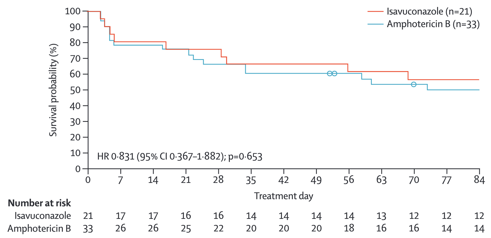
Isavuconazole drug interaction potential in HSCT
| Drug | Pharmacokinetic change | Initial management |
|---|---|---|
| Tacrolimus | ↑ AUC 1.8-3xfold ↑ Cmax 1.4-2.8xfold |
40-50% reduction in tacrolimus dose, TDM. Some case series suggest no empiric dose reduction was required |
| Prednisone or Prednisolone | ↑ AUC (8%) minimal | No dose adjustments recommended |
| Ruxolitinib | ↑AUC and Cmax by an average of 27% and 8% | Although dose reduction is recommended for strong CYP3A4 inhibitors, no dose reduction recommended with moderate inhibitors such as isavuconazole |
Isavuconazole drug interaction potential
| Drug | Pharmacokinetic change | Initial management |
|---|---|---|
| Venetoclax | ↑AUC 2-3.9xfold | Dose reduction of venetoclax by 50% |
| Midostaurin | ↑AUC 1.44xfold higher | Avoid strong CYP3A4 inhibitors, no dose reduction recommended for moderate CYP3A4 inhibitors |
| Gilteritinib | ↑AUC 1.4xfold; ↑Cmax 1.2-fold higher |
Avoid strong CYP3A4 inhibitors, no dose reduction recommended for moderate CYP3A4 inhibitors |
Does TDM support claims of less potent
CYP3A4 inhibition?
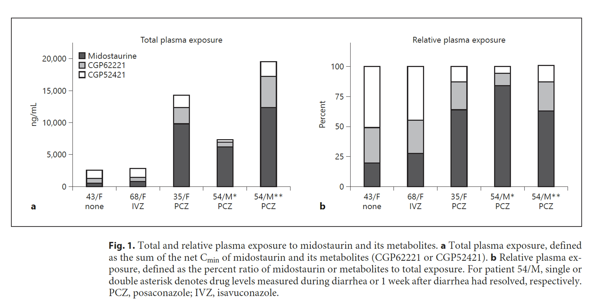

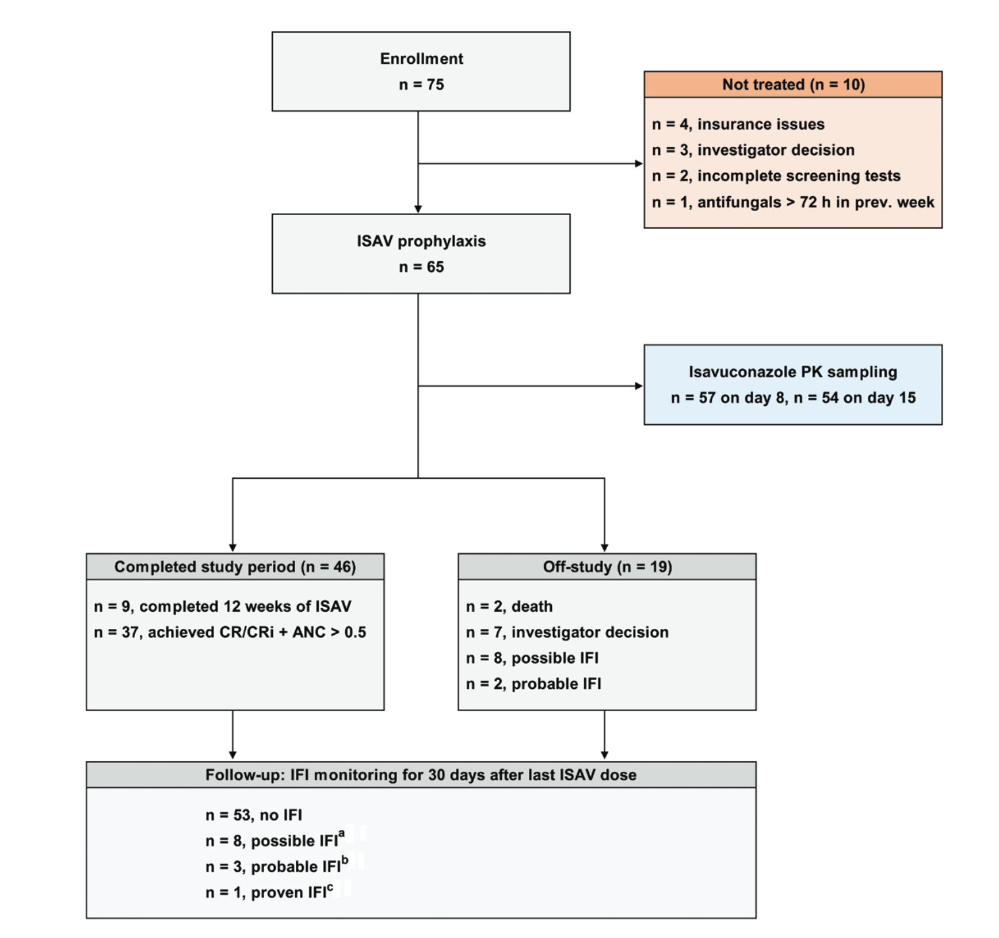
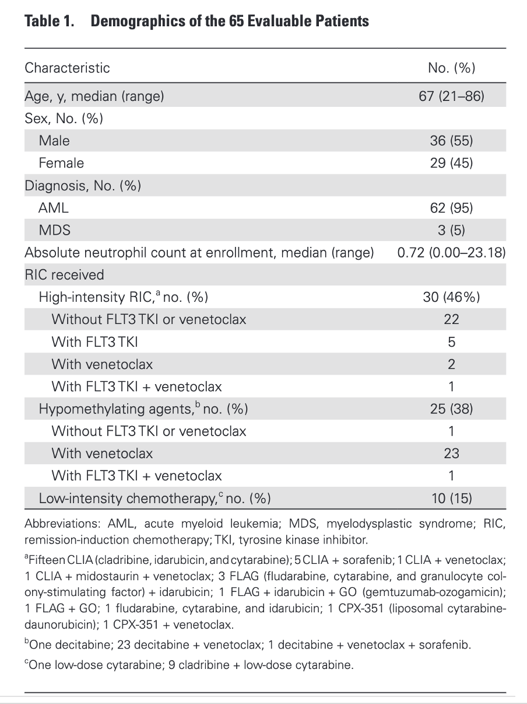
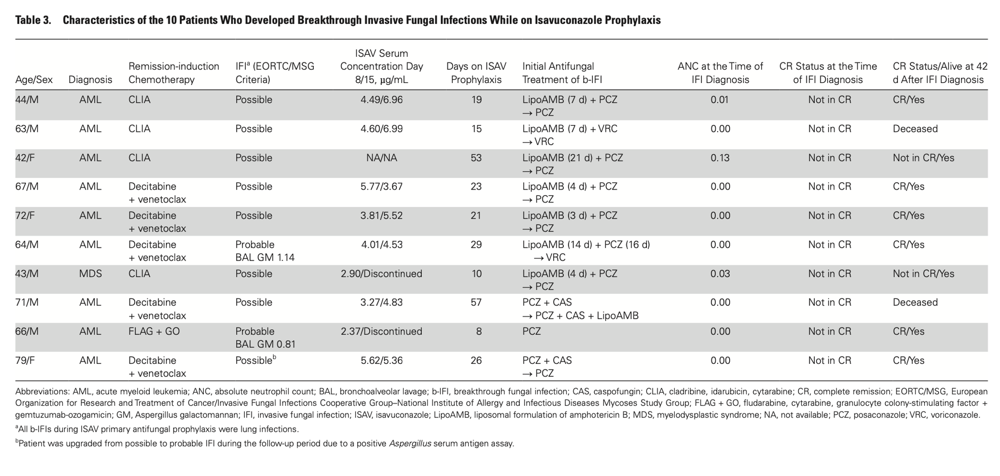
Isavuconazole tolerability
- Posaconazole experience
(previous study with tablet/IV)Grade III/IV liver injury with tablet and IV formulations (9%)
Primary hyperbilirubinemia
Higher frequency in patients with POS serum levels > 1,830 ng/mL
- Isavuconazole (current study)
Grade 1 transaminitis (2.7%)
Grade 2 elevated T. bilirubin (1.3%)
No elevations in QTc detected vs. baselines at 10 days
“Isavuconazole was well tolerated and facilitated use of the most potent molecular-targeted agents in remission-induction chemotherapy with excellent short term survival and high remission rates.”
dd
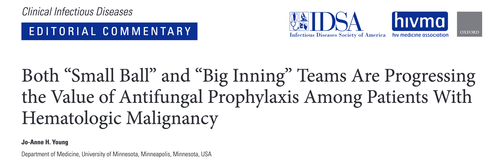Jo-Anne H. Young, Clin Infect Dis 2021
“This is the first antifungal prophylaxis study in this select population of patients with leukemia, specifically, those patients being treated with the BCL-2 antagonist venetoclax and fms3-like tyrosine kinase 3 (FLT3) inhibitors.
“Clinicians should take away from these studies the fact that many of the advanced-generation azoles can be used interchangeably in times of prophylaxis when they are needed.”
Summary
- Knowledge of fungal infection risk with targeted therapy is evolving, and depends heavily on the individual patient treatment scenario
- Many small molecule inhibitors are metabolised by CYP3A4/5 and have potential for QTc prolongation, making concurrent use with broad-spectrum triazoles difficult
- Isavuconazole has several unique pharmacokinetic and safety advantages over older triazoles, making it an useful alternative in patients receiving targeted therapies
Thank you for your attention!


References
All figures created by R. Lewis using www.biorender.com